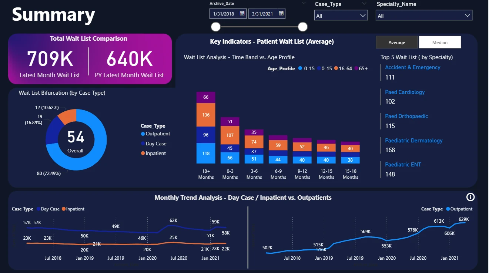
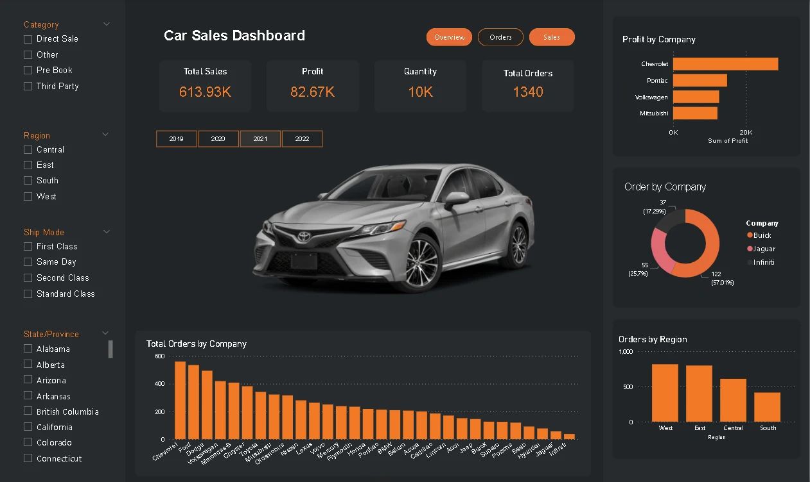

Finance & Banking
Profitability, cash flow and budget-versus-actual views.
At AR BI Consulting, we turn complex data into actionable insights through intelligent dashboards, advanced analytics, and business intelligence solutions.


Reporting built on how your business actually runs.
Every number traced back to a source you trust.
Designed around your questions, not a template.
Insight framed as the decision it supports.
AR BI Consulting is an independent Business Intelligence practice. We simplify complexity so your team spends its time deciding, not reconciling spreadsheets.
To empower businesses with intelligent data solutions that simplify complexity and support smarter decision-making.
To become a trusted global partner for businesses seeking reliable, innovative, and impactful Business Intelligence solutions.
Numbers are validated against their source before anything is published.
Dashboards and documentation written for the people who use them.
Solutions shaped around your tools, data and team.
Models and reports that scale as your questions change.
Choose a service to see what it delivers and how it helps your business.
Power BI and Excel dashboards built by AR BI Consulting, plus illustrative samples for SQL and data modeling. Select a project for objectives, technologies and business value.
Power BI and Excel projects are screenshots of dashboards built by AR BI Consulting; names and personal details are not shown. Projects labelled Sample are illustrative demos or example queries on sample databases, not client work.
Every sector asks different questions. The method stays the same.
Profitability, cash flow and budget-versus-actual views.
Pipeline, campaign performance and target tracking.
Enrolment, attendance and outcome reporting.
Operational capacity, scheduling and service reporting.
Sales trends, stock levels and customer behaviour.
Performance scorecards that keep teams aligned.
Five clear stages, with a review point at the end of each.
We learn your goals, decisions and data sources.
We assess data quality and define the KPIs that matter.
You approve layout and logic before we build.
We build, validate and test against your source data.
Handover, walkthrough and documentation for your team.
A focused practice with direct communication and careful work.
Hands-on Business Intelligence delivery, not theory.
Built around your process, your data and your people.
We start with the decision, then work back to the data.
Clear updates and straight answers throughout.
Figures are reconciled to source before you see them.
Clean, consistent layouts your leadership can read at a glance.
Models and reports that grow without a rebuild.
Straight answers about Power BI consulting, our process and how to start.
AR BI Consulting is an independent Business Intelligence consultancy based in Islamabad, Pakistan. We build Power BI dashboards, write DAX and SQL, design data models and automate reporting, so businesses can make decisions from reliable data.
We offer ten services: Power BI dashboard development, advanced DAX development, SQL development and database reporting, Excel dashboard development, Power Query and data transformation, data modeling and semantic models, business intelligence consulting, dashboard optimization and performance tuning, automated business reporting, and KPI and executive reporting.
AR BI Consulting has 4.7+ years of professional Business Intelligence experience, covering dashboards, data modeling, SQL, DAX and reporting automation.
Power BI consulting means getting expert help to connect your data, build a reliable data model and design dashboards that answer your business questions. It helps most when reports are slow, when numbers disagree between teams, or when reporting still depends on manual spreadsheets.
Yes. We build Excel dashboards and reporting workbooks as well as Power BI reports, and we can help move Excel-based reporting into Power BI when that suits your team.
Every project follows five stages: Discover (we learn your goals, decisions and data sources), Analyze (we assess data quality and define the KPIs that matter), Design (you approve layout and logic before we build), Develop (we build, validate and test against your source data) and Deliver (handover, walkthrough and documentation for your team).
We work with finance and banking, sales and marketing, education, healthcare, retail and e-commerce, and operations and management. Every sector asks different questions, and the method stays the same.
The cost depends on scope: the number of data sources, the complexity of the data model and how many dashboards are needed. Share your goals through the contact form or by email and we will reply with a proposal. We do not publish fixed prices because every project is different.
We are based in Islamabad, Pakistan and work remotely. We welcome clients in the USA, UK, Canada, Australia, Europe and other markets.
The Power BI and Excel projects in the portfolio are screenshots of dashboards with personal details removed. Items labelled Sample are illustrative examples built on sample data, not client work.
Book a free consultation through the contact form, by email at arbiconsultings@gmail.com, or on WhatsApp at +92 310 2521471. Tell us which decisions you need to make and which data you have, and we will suggest the next steps.
Still have a question? Send us your project details and we will reply, or browse all FAQs.
Go deeper on the parts that matter to you.
Tell us what you want to understand. We will reply with a clear next step.
Thank you. We will review your project details and reply to your business email with next steps.